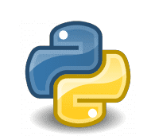
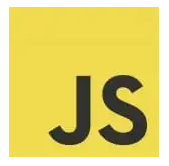

Python is an advanced programming language that is interpreted, object-oriented and built on flexible and robust semantics.
Java:
Java is a general-purpose, object-oriented, high-level programming language with several features that make it ideal for web-based development.
Ruby:
Ruby is an open-sourced, object-oriented scripting language that can be used independently or as part of the Ruby on Rails web framework.
HTML (HyperText Markup Language):
HTML is the standard markup language used to create web pages; it ensures proper formatting of text and images (using tags) so that Internet browsers can display them in the ways they were intended to look.
JavaScript:

JavaScript is a client-side programming language that runs inside a client browser and processes commands on a computer rather than a server. It is commonly placed into an HTML or ASP file. Despite its name, JavaScript is not related to Java.
C Language:
C Language is a structure-oriented, middle-level programming language mostly used to develop low-level applications.
C++:
C++ is a general purpose, object-oriented, middle-level programming language and is an extension of C language, which makes it possible to code C++ in a “C style”. In some situations, coding can be done in either format, making C++ an example of a hybrid language.
PHP:
PHP is an open-source scripting language designed for creating dynamic web pages that effectively work with databases. It is also used as a general-purpose programming language